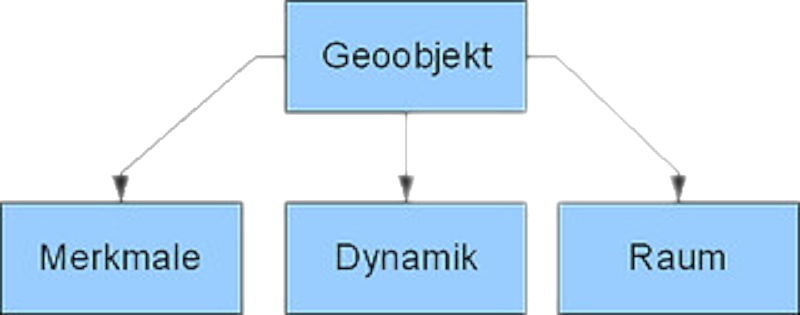

Die Beantwortung der Frage „Was sind Geodaten bzw. Geodaten?“ ist trotz der bisherigen Erläuterungen nicht wirklich greifbar. Die Abstraktion erscheint bisher willkürlich und nicht nachvollziehbar.
Geodaten bzw. geographische Daten (singl. Daten) liefern räumlich fixierte, maschinenlesbare Konstrukte aus Zeichen, Bildern oder Funktionen, die mit entsprechenden Interpretationsregeln zu Informationen werden. Da Daten Interpretationsregeln benötigen, um zu Informationen zu werden, müssen wir dieses Wissen nur noch mit dem Ziel einer geographischen Darstellung der Welt verknüpfen.
Was sind Geodaten?
Die zentrale Frage lautet: Was ist spezifisch geographisch und wie können wir diese geographischen Ableitungen der Wirklichkeit vornehmen? Ein typisches Beispiel für Geodaten ist in der folgenden Aussage kodiert:
Die Temperatur am Flughafen Havanna betrug am Donnerstag, den 17.09.2009 um 08:00 Uhr Ortszeit 23,0°C. Die Koordinaten sind: 22° 59′ 21″ N, 82° 24′ 33″ W, 64 m über dem Meeresspiegel..
Wenn wir diese Aussage analysieren, finden wir alle wesentlichen Elemente der geographischen Darstellung eines Objekts der realen Welt. Die Aussage verbindet den Raum (Koordinaten und Höhe) mit der Zeit (Datum/Zeitangabe) und der Eigenschaft bzw. dem Attribut der Lufttemperatur. Zusätzlich werden dem so definierten Ort weitere Eigenschaften zugeordnet: Havanna und Flughafen. Aus dieser Aussage kann schließlich folgendes geographisches Datum gebildet werden:
Geodaten verknüpfen also räumlich eindeutig lokalisierte Objekte mit mindestens einer Merkmalsausprägung. Diese „Datenprimitive“ können natürlich beliebig komplex werden und darüber hinaus direkt oder auch indirekt miteinander in Beziehung gesetzt oder voneinander abgeleitet werden. Auch scheinbar nicht-geographische Aussagen wie
„Der K2 hat die schwierigste einfachste Bestreigungsroute eines Achttausenders.“
können in eine geographische Angabe umgewandelt werden. Dazu sind weitere Kenntnisse bzw. Kodierungsregeln notwendig. So muss man wissen, dass K2 der international bekanntere Name des Lambha Pahar, des zweithöchsten Berges der Erde, ist. Man muss auch wissen dass der Name die geographische Koordinate des Gipfel kodiert und dass „Normalroute“ im Alpinistenjargon „die am häufigsten begangene und in der Regel einfachste Besteigung“ bedeutet. Diese Interpretation wird somit zum geographischen Datum:
Eigenschaften von Raumobjekten
Bereits an diesen beiden Beispielen wird deutlich, dass die Eigenschaften von Raumobjekten nahezu beliebige Ausprägungen haben können. Einige dieser Ausprägungen können physischer Natur sein oder beschreiben soziologische Aspekte, verweisen auf Eigentumsrechte, sind fortlaufende Nummern etc. Sie können Orte (z.B. Adressen) oder Räume (z.B. bestimmte Postleitzahlen) identifizieren. Sie können Maßzahlen sein (z.B. Einwohner/Fläche) oder kategoriale Ausprägungen haben (beliebte Kneipe, unbeliebte Kneipe). Da es in den Wissenschaften üblich ist, mit Werten, Attributen und deren Ausprägungen zu arbeiten, sind diese auch im Bereich der Geographischen Informationssysteme bekannt. Die Skalenniveaus sind bereits aus der Statistik bekannt und werden als Nominal-, Ordinal- und Kardinalskala bezeichnet. Sind Merkmalsausprägungen zeitabhängig, werden sie als zyklisch bezeichnet.
So einfach Geodaten erzeugt werden können, so sehr stoßen wir auf ein bekanntes Problem. Es ist zwar beeindruckend, die Temperatur am Flughafen von Havanna um 8:00 Uhr Ortszeit am 17.09.2009 als Repräsentation des Wetters zur Verfügung zu haben. Aber wie gut beschreibt diese Darstellung des Wetters den Durchzug eines Hurrikans um 8.15 Uhr am selben Tag?
Das Problem der Abstraktion
Die Welt ist im Prinzip beliebig komplex. Unsere Computer hingegen sind in ihren Möglichkeiten, Merkmalsausprägungen zu verarbeiten und zu speichern, extrem endlich! Die Möglichkeiten unseres Gehirns liegen irgendwo dazwischen. Folglich kann aufgrund der mentalen und technischen Begrenztheit nur eine äußerst begrenzte Anzahl von Merkmalsausprägungen in die Repräsentation der realen Welt eingehen. Daraus ergibt sich die Notwendigkeit einer gezielten Vereinfachung der realen Welt. Um bei der Entwicklung geographischer Darstellungen einen objektivierbaren Rahmen für diese Vereinfachungen zu haben, werden diese immer skalenorientiert auf der räumlichen und Zeitskala durchgeführt.
Daten sind abstrahierte Wirklichkeit
Aufgrund der Vielzahl von Reduktionsmöglichkeiten bei der Beschreibung der Erde gibt es innerhalb der GI eine unüberschaubare Vielzahl von Konzepten und Vorgehensweisen für diesen Prozess. Die Frage nach einer sinnvollen, validen und angemessenen Vereinfachung von Darstellungen der realen Welt wird uns immer wieder beschäftigen. Dennoch können die beiden folgenden Definitionen als allgemeingültig angesehen werden.
